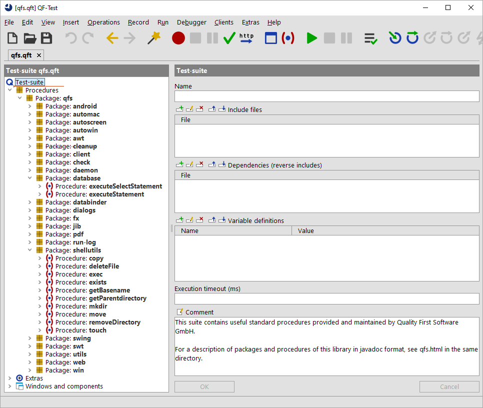

| Version 6.0.3 |
The standard library qfs.qft, a test-suite that is part of the QF-Test
distribution, contains many useful procedures for a diverse set of tasks.
|
|  | ||
|
| Figure 10.1: Standard library qfs.qft | ||
Among others there are procedures for accessing and checking components (AWT, Swing, JavaFX, SWT, Web) in a generic manner, file system and database access, logging messages or screenshots to the run-log and report and for performing cleanup.
A complete description of all packages and procedures including parameters and return values is provided in the library's HTML documentation, also accessible from the QF-Test »Help« menu. The latest version is also available online.
qfs.qft is included by default in every newly created test-suite. As its
directory is on the library path, specifying just
qfs.qft in the 'Include files' of the 'Test-suite' node is sufficient.
Note
All procedures referring to an SUT use the generic variable $(client) as an
implicit parameter. You must make sure that this variable is set correctly either globally or
locally or specified as an explicit parameter in the procedure call.
| Last update: 9/6/2022 Copyright © 1999-2022 Quality First Software GmbH |